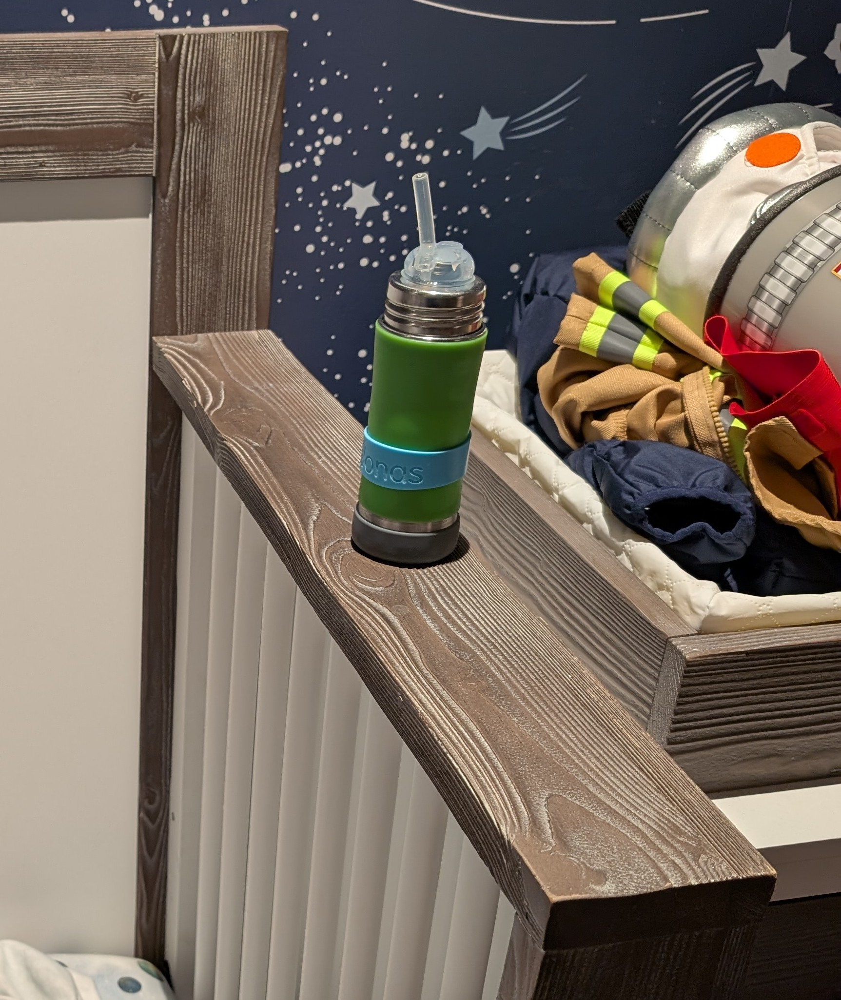

Where to find things#
Diapers#
Dresser next to the crib, top drawer in the middle.
Underwear#
Dresser next to the crib, top drawer in the middle.
Clothes#
Dresser next to the crib, middle drawer.
Pajamas#
Dresser next to the crib, middle drawer.
Shoes#
His normal red shoes are under the shoe bench. Snow/rain boots are inside the bench.
Coats#
Above the shoe bench.
Backpack#
Above the shoe bench.
Mask#
In the diaper bag backpack. The small middle zipper.
Vitamins#
1 per day.
Yellow & red bottle to the left of the sink.
Iron#
2 per day.
Red bottle next to the espresso machine.
Bottles#
Upper cabinet to the right of the sink, bottom shelf.
Sleep Sack#
Usually lives in the crib. Take it out and leave it on his small chair during naps.
Medicine#
Guest bath vanity, top right drawer. It has a magnet lock. The magnet is stuck on the wall next to the medicine cabinet.
Or the medicine cabinet in the guest bath.
Band-aids#
Master bath vanity, bottom left drawer.
Toothbrush#
Master bath vanity, right of the sink. His toothbrush is the blue one. The head is the one with the frozen characters in the case next to the other brush.

Crib Bottle#

Prepared Foods#
Pantry#

Puffs#